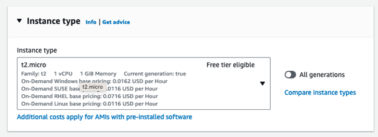

Create and Deploy Server to the Cloud
Overview
AWS EC2 allows you to deploy servers and resources for computers in the cloud, such as a Linux server.
Business Requirements
-
Deploy an Ubuntu Linux Server on AWS
-
Deploy a docker on the Linux Server (next week)
Project Overview
-
Create an Ubuntu EC2 instance on AWS
-
Add in Docker with the nginx package to host a website (next week)
Table of Contents
- Part 1 - Setup an EC2 Instance
- Log into AWS Console
- Launching an EC2 Instance - The Manual Way
- Connecting to the Server
- Run Security Updates
- Install Something (nmap port scanning)
- Basic Linux Commands
- Learning More
Part 1 - Setup an EC2 Instance
Log into AWS Console
-
Log into your AWS Console through your learner lab
Launching an EC2 Instance - The Manual Way
-
When in your AWS console, search EC2 in the search bar and click EC2

-
Click Launch Instance

-
Pick a name for the server like Ubuntu

-
Click on Ubuntu

-
Pick how much processing power and RAM you want. We will stick with the default t2.micro
If you are going to use a GUI (we are not), you will want ot do at least a t3.small instance. This server doesn't have a GUI though. It is only accessible from a terminal.
-
Click Create New Key Pair. This is the security key you need to connect to the server. It is like a password file.

-
Name the key and keep the settings at their default (RSA key pair type, and .pem key file format).

Click Create Key Pair and this will download it to your computer. Make sure to save this in a place where you will remember where it is.
-
Select the ports that you want open to be able to access the server. (e.g port 22 (selected by default) to ssh into the server)

-
Pick how much hard drive space you need on the server

Click Launch Instance
Connecting to the Server
-
Click Connect to Instance

-
Click Connect.

-
Alternatively, you could use Powershell or terminal to ssh in with the key you downloaded earlier. You would need to find the public IP of your EC2 instance in the details page under instances in the EC2 dashboard and run the following command (replace 3.3.3.3 with your public IPV4 address):
ssh -i yourkey.pem ubuntu@3.3.3.3
-
Run Security Updates
-
Make sure to update the instance often
This gets the updates for the server:
sudo apt-get update
This applies the updates for the software and services that need updates
sudo apt-get upgrade
This reboots/restarts the server (Only need to do this on kernel or Major OS updates)
sudo reboot
-
Linux Kernel Upgrades (take a snapshot and test on a copy first - dev server if possible):
This applies Linux minor kernel updates to the operating system. (This update takes some time to do, so only run this if you have time)
sudo apt-get dist-upgrade
sudo reboot
-
Major OS upgrades (take a snapshot and test on a copy first - dev server if possible):
Check the LTS version and see when the endo fo life is for that version of Ubuntu. You might have to do a major upgrade:
This does a major update from something like Ubuntu 22 to Ubuntu 24 (Only run this if you need to):
sudo do-release-upgrade
sudo reboot
Install Something (nmap port scanning)
-
This installs softwar/applications/services on the system (fill in the blank with what you want to install):
sudo apt-get install ______
This installs nmap, a tool to scan servers to see what ports are open on a system
sudo apt-get install nmap
This scans the local server you are running it from to see what ports are open
nmap localhost
Basic Linux Commands
-
This displays what folder you are currently in
pwd
This displays what files and folder are in your current directory
ls
Displays what user you are logged in as
whoami
Move Up a Folder
cd ..
Move to another folder or directory
cd foldername
Learning More
-
Make a new folder
mkdir testfolder
Delete a File
rm filename
Copy a File
cp filename newfilename
Move a File
mv filename newfilename